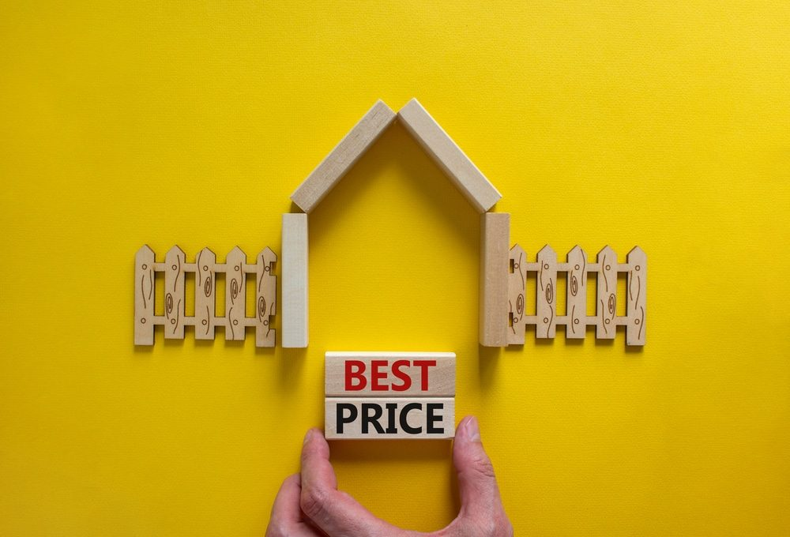

In This Guide
- Material, fence length, height, labor, and upkeep are the five things that set the price of a fence.
- Using full height only where you need it, choosing a lower-cost material, and reusing sound posts can cut the bill.
- Compare written quotes that cover the same work, and ask about slower times of year for scheduling.
- Count long-term upkeep as part of the cost, since a cheap fence that needs constant care can cost more over time.
Planning a fence budget can feel like a lot to take in. Material, style, and the length of your property line all move the price, and it is easy to overspend on one part while skimping on another. A little planning before you call anyone usually saves more than a last-minute hunt for discounts.
This guide from Big Easy Fence covers where the money goes in a fence project and the practical ways to keep the total down without ending up with something that falls apart.
Plan Ahead and Spend Less on Materials

Plan Before You Ask for Quotes
Decide what the fence is for, how long it needs to be, and whether you are replacing an old one or starting fresh. Jot down the type you want, such as wood, wrought iron, or chain link, and browse our fence types to narrow it down. A clear brief means quotes you can compare, and fewer changes once work begins.
Use Less Material Where You Can
A fence does not need to be the same height and style everywhere. Fence materials are priced by size, so smaller and shorter pieces cost less. You might use full-height privacy fencing in the back yard where it matters, and a lower, simpler fence along the front. Enclosing only the part of the property you need is another way to trim the total.
Choose a Lower-Cost Material
Chain link is usually the least expensive way to replace a fence, and chain link fences can be dressed up with slats or a colored coating so they look less plain. Treated pine is a common budget wood, and split rail styles cost less than fully enclosed designs. If you want a natural look at a lower price, wood fences in a simple style are often the sweet spot.
Save on Labor, Timing, and Quotes
Reuse and Repair What You Have
If your current fence has sound posts, you may not need to start over. Replacing a few boards, resetting a leaning post, or refreshing the stain can add years for a fraction of the cost of a new fence. When damage is beyond a quick fix, our fence repair team can tell you whether repair or replacement makes more sense.
Handle Part of the Work Yourself
Labor is often the biggest share of a fence budget, so doing easy tasks yourself can help. Clearing the fence line, hauling away the old fence, or staining the new one after install are common choices. Full installation is harder than it looks, since slopes, roots, and uneven ground can turn a weekend job into a long one. If you dig at all, have underground utility lines marked first by calling 811.
Sort Out Permits Early
Some contractors take care of permits and include the cost in the bid. If you would rather handle a permit yourself to avoid that line item, check what your city or parish requires, and confirm with your installer who is responsible for what.
Ask About Slower Seasons
Fence companies are often busiest in spring and fall. Ask about scheduling in slower months, when crews may have more openings. We cover the idea in more detail in why you should invest in a fence during the off-season.
Compare Written Quotes
Do not settle for the first quote you get. Ask two or three companies for written estimates on the same job, and compare more than the bottom line. Look at materials, post depth, gates, hardware, removal of the old fence, and cleanup, so you are comparing like with like.
What Drives the Price of a Fence
Fencing Material
Material is one of the biggest factors. Some materials last longer, some are harder to source, and both affect cost. The table below gives a rough sense of how common options compare.
| Material | Upfront Cost | Upkeep | Good Fit |
|---|---|---|---|
| Chain Link | Lowest of the common options | Low | Back yards, side yards, and budget projects |
| Wood | Moderate | Sealing or staining | Privacy and a natural look |
| Vinyl | Higher | Low | Homeowners who want little maintenance |
| Aluminum | Higher | Low | Decorative, rust-resistant fencing |
| Wrought Iron | Higher | Coating touch-ups | Elegant, long-lasting fencing |
Length of the Fence Line
Most fencing is priced by the foot, so the longer the perimeter, the higher the cost. If a full enclosure is not necessary, fencing only the front or only the back can make sense.
Height
Taller fences use more material and take more work to build. Choose the height that fits your goal, whether that is privacy, security, or looks, and check local rules on maximum height.
Labor and Site Conditions
Labor can take a big slice of the budget. Slopes, rocky or root-filled ground, tight access, and old fence removal all add time. That is part of why quotes for similar fences can vary.
Maintenance Over Time
Think about what the fence will need after it is built. Wood needs sealing or staining, and other materials need less. A lower price now can carry higher upkeep costs later, so include upkeep when you compare.
Making the Numbers Work
The cheapest fence is not always the best value, and the priciest is not always the strongest. A fence that fits your needs, is built well, and holds up to Louisiana weather usually costs less over the years than one that needs early repairs. If you would like a number for your own yard, our residential fencing services come with a free estimate, which is an easy way to see where the money goes.
Want a Clear Number for Your Fence?
Share what you have in mind and we will walk you through the options and what drives each cost.